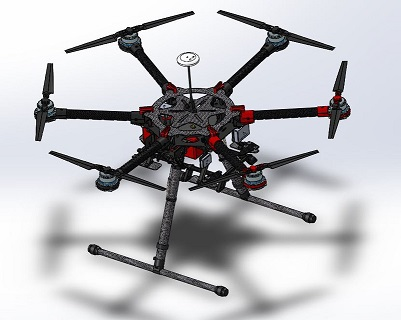
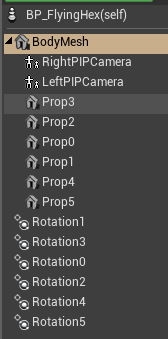
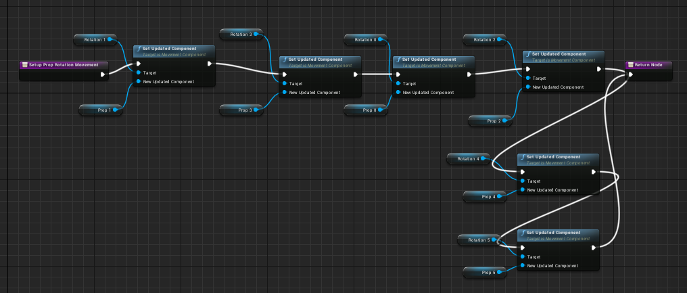

构造六旋翼飞行器#
那么 AirSim 能飞六旋翼飞行器吗？答案是可以，但设置起来需要一些工作。具体来说，需要更新三个组件：首先是 PX4 固件，然后是 AirSim 物理系统，最后是渲染模型。
PX4 修改#
PX4 需要处于六轴飞行器模式(hexacopter mode)，才能为所有 6 个电机提供输出。但是，如果您熟悉 QGroundControl 的“HIL 四轴飞行器”机身，您会注意到它没有 HIL 六轴飞行器。根据 PX4 团队的说法，我们不需要使用特殊的机身就能让 PX4 在 HIL 模式下正常工作，但很遗憾，今天我们不得不这么做。PX4 存在一些 bug，会导致 HIL 模式在任何机身上都无法正常工作。因此，除了修复这些 bug 之外，以下是获取 HIL 六轴飞行器机身选项的快速方法。首先，按照 px4 中的说明克隆 git 仓库，然后执行以下操作：
cd ROMFS/px4fmu_common/init.d
cp 1001_rc_quad_x.hil 1004_rc_hex_x.hil
gedit 1004_rc_hex_x.hil
并使其包含以下内容：
#!nsh
#
# @name HIL Quadcopter +
#
# @type Simulation
#
# @maintainer Anton Babushkin <anton@px4.io>
#
sh /etc/init.d/rc.mc_defaults
set MIXER hexa_x
# Need to set all 8 channels
set PWM_OUT 12345678
set HIL yes
保存此文件，然后使用 make px4fmu-v2_default 命令重新构建 px4。如果您已经构建过，请删除之前的构建输出 build_px4fmu-v2_default，以确保您的新构建选择这个新的ROMFS文件。
现在找到名为 PX4AirframeFactMetaData.xml 的 QGroundControl 配置文件，在 Windows 上，它位于 %APPDATA%\QGroundControl.org\PX4AirframeFactMetaData.xml。找到 airframe id="1001"，复制整个 airframe XML 元素并将其替换为：
<airframe id="1004" maintainer="Anton Babushkin <anton@px4.io>" name="HIL Hexacopter X">
<maintainer>Anton Babushkin <anton@px4.io></maintainer>
<type>Simulation</type>
</airframe>
您可以将维护者设置为任意人。现在，当您的 Pixhawk 重启时，QGroundControl 应该会在“HIL”机身类型下显示一个 HIL Hexacopter X 选项，选择它并将其应用到 PX4 上，重启后，它就可以在 HIL 模式下作为六轴飞行器飞行了。
AirSim 物理系统#
物理很简单，您需要做的就是在 设置 json 文件 中指定这个“模型”：
"Model": "Hexacopter",
但这有什么作用呢？在内部，这会导致 Px4MultiRotor.hpp 调用 setupFrameGenericHex()，后者调用 initializeRotorHexX，该方法根据 推荐的电机布置 执行以下操作。
static void initializeRotorHexX(vector<RotorPose>& rotor_poses /* the result we are building */,
uint rotor_count /* must be 6 */,
real_T arm_lengths[],
real_T rotor_z /* z relative to center of gravity */)
{
Vector3r unit_z(0, 0, -1); //NED frame
if (rotor_count == 6) {
rotor_poses.clear();
/* Note: rotor_poses are built in this order: rotor 0 is CW
x-axis
(2) (4)
\ /
\/
(1)-------(0) y-axis
/\
/ \
(5) (3)
*/
// vectors below are rotated according to NED left hand rule (so the vectors are rotated counter clockwise).
Quaternionr quadx_rot(AngleAxisr(M_PIf / 6, unit_z));
Quaternionr no_rot(AngleAxisr(0, unit_z));
rotor_poses.emplace_back(Vector3r(0, arm_lengths[0], rotor_z),
unit_z, RotorTurningDirection::RotorTurningDirectionCW);
rotor_poses.emplace_back(Vector3r(0, -arm_lengths[1], rotor_z),
unit_z, RotorTurningDirection::RotorTurningDirectionCCW);
rotor_poses.emplace_back(VectorMath::rotateVector(Vector3r(arm_lengths[2], 0, rotor_z), quadx_rot, true),
unit_z, RotorTurningDirection::RotorTurningDirectionCW);
rotor_poses.emplace_back(VectorMath::rotateVector(Vector3r(-arm_lengths[3], 0, rotor_z), quadx_rot, true),
unit_z, RotorTurningDirection::RotorTurningDirectionCCW);
rotor_poses.emplace_back(VectorMath::rotateVector(Vector3r(0, arm_lengths[4], rotor_z), quadx_rot, true),
unit_z, RotorTurningDirection::RotorTurningDirectionCCW);
rotor_poses.emplace_back(VectorMath::rotateVector(Vector3r(0, -arm_lengths[5], rotor_z), quadx_rot, true),
unit_z, RotorTurningDirection::RotorTurningDirectionCW);
}
else
throw std::invalid_argument("Rotor count other than 6 is not supported by this method!");
}
现在可能需要解释一下上面的 Vector3r 参数。上面标记为 (0) 的第一个电机位于 y 轴上，因此它的矢量很明显：Vector3r(0, arm_lengths[0], rotate_z)，x 轴为 0，y 轴为臂长。
标记为 (1) 的第二个电机也很明显。但是电机 (2) 呢？VectorMath::rotateVector(Vector3r(arm_lengths[2], 0, rotate_z), quadx_rot, true) 的 x 轴设置为臂长，y 轴设置为零，这意味着它在上图中一开始是垂直向上的。然后我们应用 pi/6 的旋转。但是旋转使用的是 NED 坐标系中的左手旋转规则，其中 z 轴向下，所以伸出左手，拇指向下，弯曲其他四指，这就是旋转的方向，即逆时针。因此，指向上方的臂会旋转到电机 (2) 所示的位置。其他机械臂也一样，现在我们的物理设置已经正确，可以用于六轴飞行器了。当然，你也可以根据需要增加质量，并调整电机推力参数。
渲染#
最后，为了进行渲染，我们需要一个漂亮的六旋翼飞行器三维模型。Udeshaya Wadhwa 制作了 一个可爱的 DJI S900 模型 。

所以我拿了这个模型，把电机拆了下来（这样我们就可以旋转它们了），这些可以 在这里找到 。你可以 把这些网格导入虚幻引擎 。我发现，对于模块化社区世界，我必须将 x 轴旋转 90 度，并将模型缩小到原始尺寸的 20% 左右，将默认材质改为漂亮的金属灰色，并根据四轴飞行器蓝图添加单独的可旋转电机。
我所做的是复制并粘贴 BP_FlyingPawn，将其命名为 BP_FlyingHex，然后添加另外 2 个道具和另外 2 个旋转，如下所示：

然后我编辑了 SetupPropProtationMovement 图，以便它连接 2 个新的道具：

需要注意的是，您无法通过复制/粘贴来获取“Rotation 4”节点，您必须从“组件”列表中拖出“Rotation 4”，然后选择“获取”，然后将其连接到新的“设置更新组件”框，对于“Prop 4”和“Prop 5”也同样操作。
现在您只需让它飞起来即可！是的，它成功了 :-)